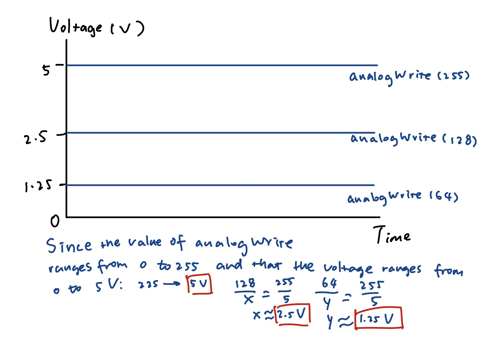
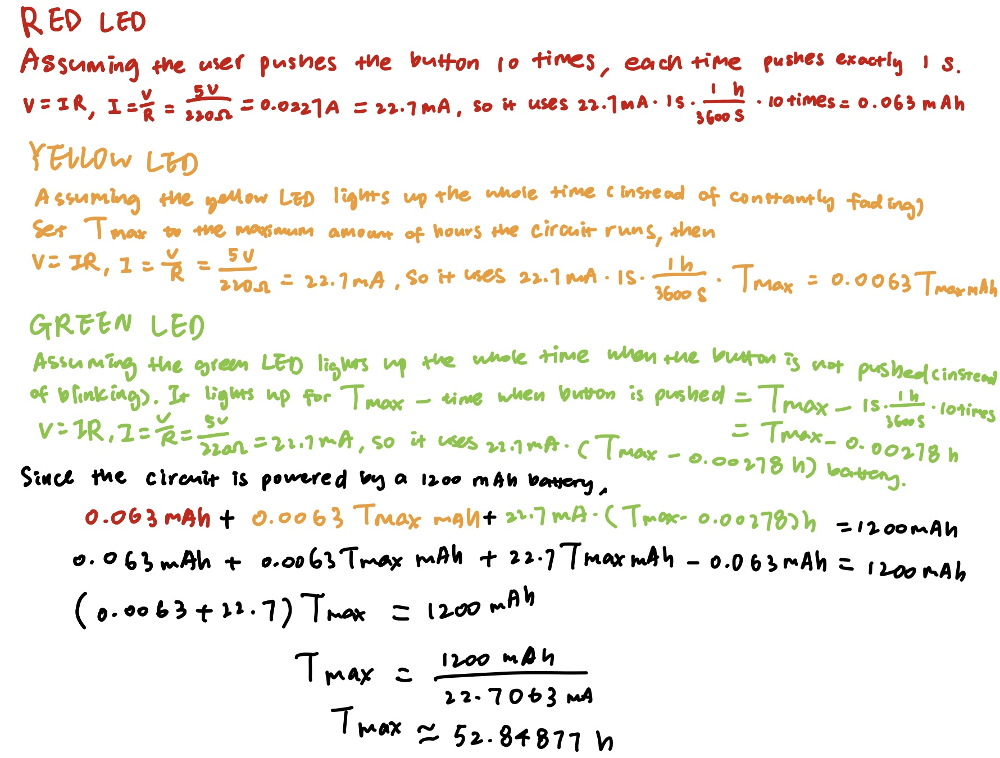

Schematic: The red LED is connected to 5V power, a resistor, a button, as well as pin 2 for detecting if the button is pushed or not. Both the yellow and green LEDs are connected to a resistor to limit the current.
Circuit: I used Ohm’s law to calculate the resistance of the resistor I should use: V=I*R. Since the voltage drop for red, yellow, and green LEDs are 1.8 V, 5V-1.8V=20mA*R. Since 1A=1000mA, R=3.2V/0.02A, R=160Ω. However, there is no 160 Ω resistor in the kit, so I chose to use the 220 Ω ones because the way to make the current to be less than 20 mA is to choose a resistor with a slightly greater resistance.
// The setup
// red LED: 5V power and pin 2
// yellow LED: pin 3
// green LED: pin 4
// initialize int num to store information about if the button is pushed or not
int num = 0;
// initialize the pins
void setup() {
pinMode(2, INPUT); // initialize pin 2 as input
pinMode(3, OUTPUT); // initialize pin 3 as output
pinMode(4, OUTPUT); // initialize pin 4 as output
}
// the yellow LED fades and the green LED blinks
// when the button is pushed, the red LED turns on and the green LED stops blinking
void loop() {
// read from pin 2, int num is 0 (LOW) when the button is not pushed, and int num is 1 (HIGH) when the button is pushed
num = digitalRead(2);
// for loop makes the yellow LED fade, int i controls the brightness of the yellow LED
for (int i = 255; i > 0; i -= 20) {
analogWrite(3, i); // set the brightness of the yellow LED (connected to pin 3) to i
delay(100); // wait for 100 ms
}
// if the pushbutton is pushed, int num is 0 (LOW), the green LED would stop blinking
if (num < 1) {
// for loop turns the green LED on and off 5 times
for (int i = 0; i < 5; i++) {
digitalWrite(4, HIGH); // turn the green LED on
delay(100); // wait for 100 ms
digitalWrite(4, LOW); // turn the green LED off
delay(100); // wait for 100 ms
}
}
}

Circuit Operation: Once the circuit is connected to power, the yellow LED fades and keeps fading when the power is connected. The green LED blinks in a pattern where it turns on, waits for 100ms, and then turns off, waits for 100ms, and repeat the process for 5 times. If the pushbutton is pushed, two things will happen: The red LED will be connected to power and be turned on, and the green LED will stop blinking.
Addtional Questions
Question 1:
Question 2:
Assuming that 1) the user pushes the button for 10 times, each time lasts for exactly 1 sec, 2) the yellow LED is on all the time instead of constantly fading, and that 3) the green LED is on all the time when the button is not pushed (instead of blinking). If powered by a 1200 mAh battery, then the circuit will run for approximately 52.84877 hours (see calculation on the graph).